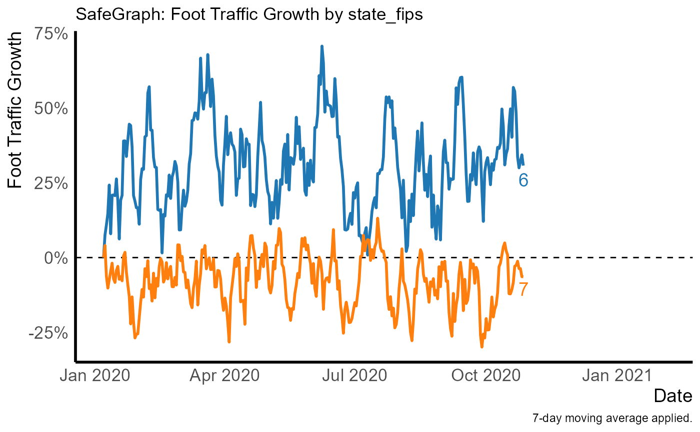

graph_template.RdProduces a line graph with labels at the end of the lines, with theming designed for the purpose. Returns a ggplot object that can be further modified as normal. Requires that the **ggplot2**, **ggrepel**, and **paletteer** packages be installed.
graph_template(
dt,
date = "date",
growth = "growth",
origin = 0,
filter = NULL,
by = NULL,
x_title = "Date",
y_title = "Foot Traffic Growth",
title = ifelse(is.null(by), "SafeGraph: Foot Traffic Growth",
paste0("SafeGraph: Foot Traffic Growth by ", paste(by, collapse = ", "))),
caption = "7-day moving average applied.",
subtitle = NULL,
label = !is.null(by),
hline = TRUE,
expand_right = NULL,
palette = "ggsci::category20_d3",
manual_palette = NULL,
skip_theming = FALSE,
line_opts = list(size = 1),
label_opts = list(size = 14/ggplot2::.pt, hjust = -0.2, vjust = 0.5, direction = "y"),
hline_opts = list(size = 0.5, linetype = "dashed", color = "black")
)A data.table (or something that can be coerced to data.table). There must be one observation per date per by in this data.
Character variable indicating the date variable (x axis).
Character variable indicating the growth variable (y axis).
The value indicating no growth/initial value.
A character variable describing a subset of the data to include, for example filter = 'state_fips == 6' to only include California.
A character variable of the variable name to assign to the color aesthetic in ggplot2::geom_line(). The values of this variable will also be sent to ggrepel::geom_text_repel().
Axis title for x-axis.
Axis title for y-axis.
Graph title.
Figure caption.
Graph subtitle.
Should a text label be applied at the end of each line?
Should a horizontal line at the origin value be included?
Number of additional days to extend the x-axis by so as to fit the labels. Defaults to adding 33 percent more days so a quarter of the graph is reserved for labels.
Discrete color palette from the **paletteer** package to be sent to paletteer::scale_color_paletteer_d(). If you like, the default **ggplot2** color theme is 'basetheme::default'.
Manually-specified color palette to be sent to the values option of ggplot2::scale_color_manual().
Don't apply the template theming, so you can apply your own.
A named list of options to be sent to ggplot2::geom_line().
A named list of options to be sent to ggrepel::geom_text_repel(). Only relevant if label = TRUE.
A named list of options to be sent to ggplot2::geom_hline(), only relevant if hline = TRUE.
# Generally you'd be doing this with data that comes from read_many_patterns()
# But here's an example using randomly generated data
dt <- data.table::data.table(date = rep(lubridate::ymd('2020-01-01') + lubridate::days(0:300),2),
state_fips = c(rep(6, 301), rep(7,301)),
visits_by_day = rpois(602, lambda = 10))
norm <- data.table::data.table(date = rep(lubridate::ymd('2020-01-01') + lubridate::days(0:300),2),
state_fips = c(rep(6, 301), rep(7,301)),
total_devices_seen = rpois(602, lambda = 10000))
processed_data <- processing_template(dt, norm = norm, by = 'state_fips')
p <- graph_template(processed_data, by = 'state_fips')
#> Warning: `guides(<scale> = FALSE)` is deprecated. Please use `guides(<scale> = "none")` instead.
p
